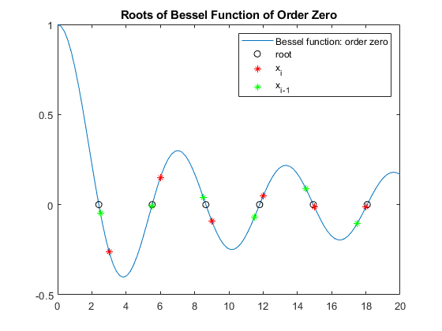

Contents
Introduction
clc
clearvars
close all
Problem 1
x=linspace(0,20);
maxit =100;
tol=1e-3;
Bessel=@objfunbessel;
ygrid=Bessel(x);
verbose = false;
x0=x(12);
x0i1=x(10);
[r1,it,success]=newton_approx(Bessel,x0,x0i1,maxit,tol,verbose);
figure(1)
plot(x,ygrid)
Warning: Used max number of iterations, or derivative near zero...

Problem 2
disp('2-a)');
f=@objfuna;
fprime=@objfuna_deriv;
for x0=1:5
[R2(x0),it,success]=newton_exact(f,fprime,x0,maxit,tol,verbose);
end
disp('Roots of x^5 - 15x^4 + 85x^3 - 225x^2 + 274x - 120 = 0')
disp(R2);
disp('2-b)');
f=@objfunb;
fprime=@objfunb_deriv;
ygrid=f(x);
for j=1:4
x0=j+1i;
[R3(j),it,success]=newton_exact(f,fprime,x0,maxit,tol,verbose);
end
disp('Roots of x^3 - 3x^2 + 4x - 2 = 0')
disp(R3);
2-a)
Roots of x^5 - 15x^4 + 85x^3 - 225x^2 + 274x - 120 = 0
1 2 3 4 5
2-b)
Roots of x^3 - 3x^2 + 4x - 2 = 0
1.0000 + 1.0000i 1.0000 + 1.0000i 1.0000 + 0.0000i 1.0000 + 0.0000i
Problem 3
disp('3-a)');
f=@objfun2Df;
g=@objfun2Dg;
gradf=@grad_objfun2Df;
gradg=@grad_objfun2Dg;
x0=0.1;
y0=0.1;
[rootx,rooty,it,success]=newton2D_exact(f,gradf,g,gradg,x0,y0,maxit,tol,verbose);
disp(' x^2 + y^2 = 2x + y');
disp('(1/4)x^2 + y^2 = 1');
disp('Roots:');
disp(rootx);
disp(rooty);
disp('3-b)');
f=@objfun3Df;
g=@objfun3Dg;
h=@objfun3Dh;
gradf=@grad_objfun3Df;
gradg=@grad_objfun3Dg;
gradh=@grad_objfun3Dh;
x0=0.1;
y0=0.1;
z0=0.1;
[rootx,rooty,rootz,it,success]=newton3D_exact(f,gradf,g,gradg,h,gradh,x0,y0,z0,maxit,tol,verbose);
disp(' x^2 + y^2 + z^2= 6');
disp(' x^2 - y^2 + 2z^2= 2');
disp('2x^2 + y^2 - z^2= 3');
disp('Roots:');
disp(rootx);
disp(rooty);
disp(rootz);
3-a)
x^2 + y^2 = 2x + y
(1/4)x^2 + y^2 = 1
Roots:
-5.2926e-05
1.0001
3-b)
x^2 + y^2 + z^2= 6
x^2 - y^2 + 2z^2= 2
2x^2 + y^2 - z^2= 3
Roots:
1.0000
1.7321
1.4142